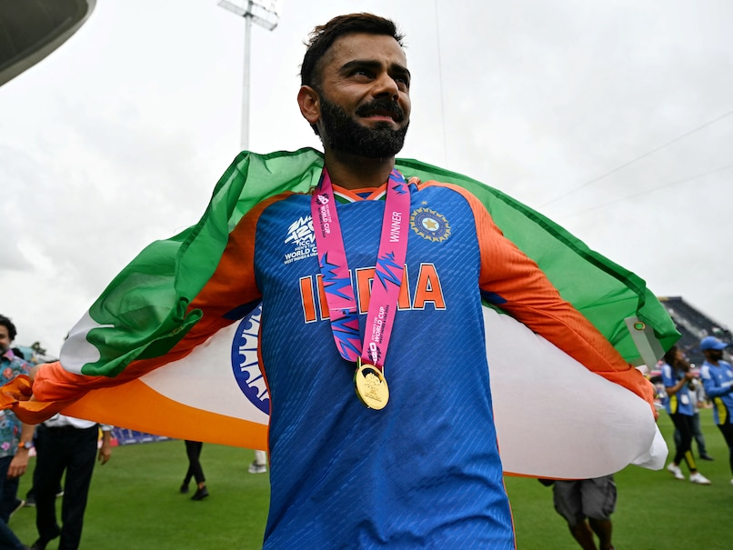

News Daily
Sanjay Manjrekar Snubs Virat Kohli In T20 World Cup Post, Draws Flak On Social Media

Soon after the final, Virat Kohli announced his retirement from the T20I format, with Rohit Sharma also following the suit.
Rohit retires as a double T20 WC champion, winning the title back in 2007 as a young up-and-coming prodigy. In 151 T20I matches, Rohit has scored 4,231 runs at an average of 32.05 with a strike rate of over 140. He scored five centuries and 32 fifties in his career, with the best score of 121*. Rohit is also the leading run-scorer in the format.
Virat has ended the ongoing edition with 151 runs in eight innings at an average of 18.87 and a strike rate of 112.68, with one fifty.
Rohit also ended the tournament with a career-best performance with the bat with 257 runs in eight games at an average of 36.71 and a strike rate of over 156.
After managing just 75 runs in the first seven innings of the competition, Virat stepped up when it mattered the most, scoring 76 in 59 balls, with six fours and two sixes. His runs came at a strike rate of 128.81.
Virat is the highest run-scorer in the history of the tournament.